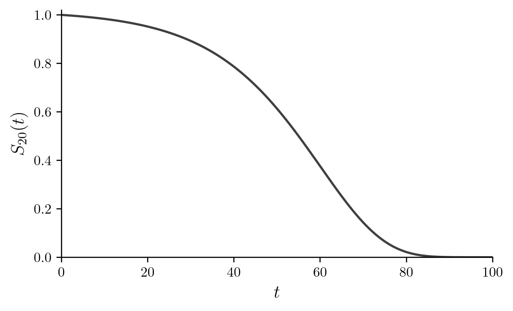
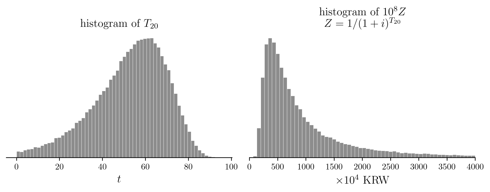
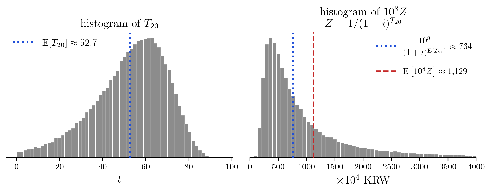
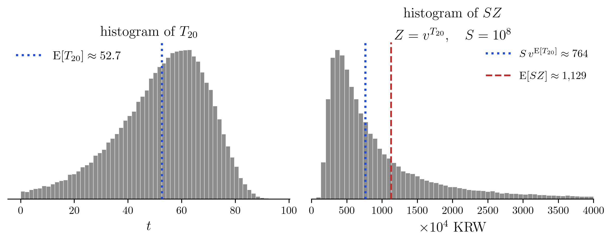
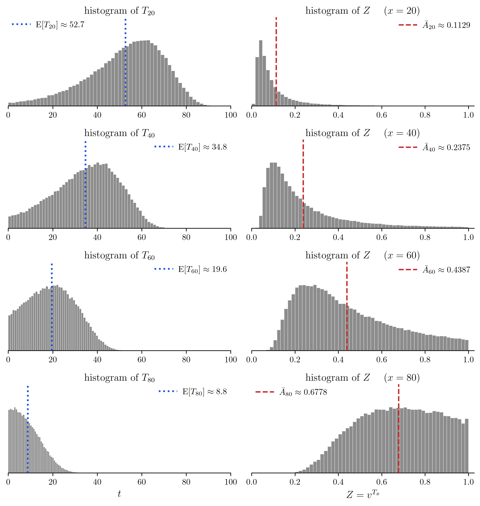
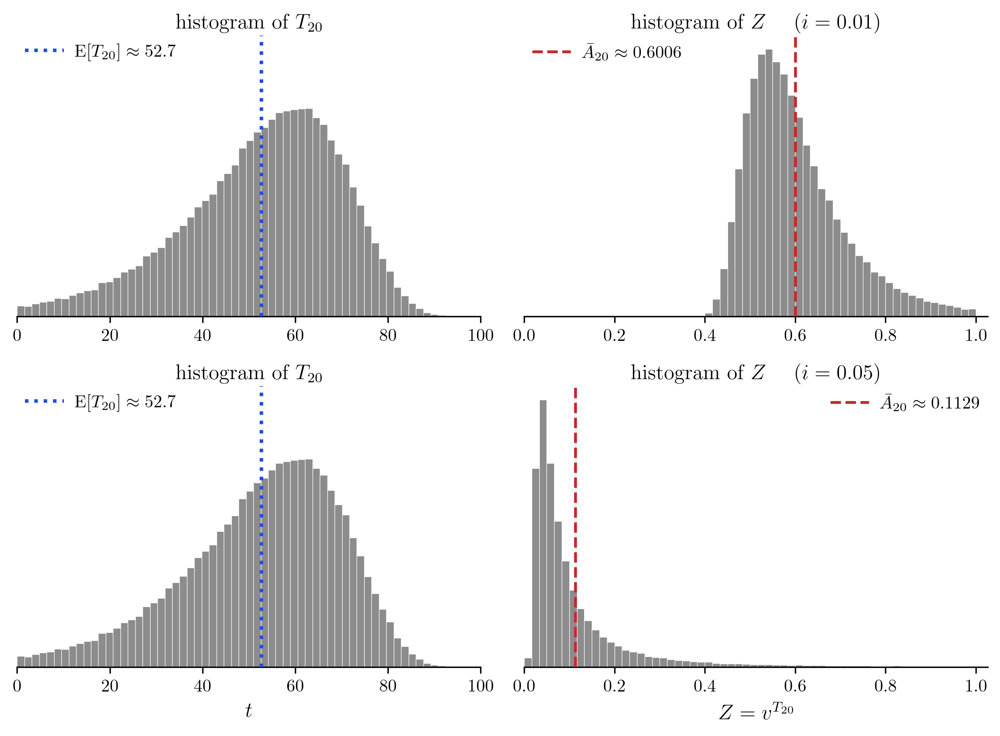

03wk-2: 보험급부 (1)
1. 강의영상
2. 보험료를 얼마로 받아야 하나
- 지금 나이가 \(x\) 인 사람이 든든종신보험에 든다고 하자. 죽으면 1억이 나온다. 이 사람이 내야 할 돈을 보험료라 한다. 보험료를 얼마로 정해야 할까?
# 예제1 \((x)\) 가 지금 숨넘어가기 직전이다. \((x)\) 는 든든종신보험에 가입하고 싶다. 보험회사는 얼마에 가입시켜줘야하는가?
(풀이) 1억. 지금 나가는 돈이라 그대로 1억이다.
# 예제2 \((x)\) 가 딱 1년 뒤에 죽는 것이 확실하다. 보험회사는 얼마에 가입시켜줘야 하는가?
(풀이) 1년 뒤에 1억을 내주면 된다. 그러니 1억보다 적게 받아도 된다. 받은 돈이 1년 동안 이자를 벌기 때문이다. 연이자율이 \(i\) 라면 받은 돈은 1년 뒤에 \((1+i)\) 배가 되므로, 그것이 1억이 되게 하려면 1억을 \((1+i)\) 로 나눈 만큼만 받으면 된다.
\[\frac{10^8}{1+i}\]
# 예제3 \((x)\) 가 딱 \(n\) 년 뒤에 죽는 것이 확실하다면? 보험회사는 얼마에 가입시켜줘야 하는가?
(풀이) 이번에는 이자가 \(n\) 번 붙는다. 받은 돈은 \(n\) 년 뒤에 \((1+i)^n\) 배가 되므로
\[\frac{10^8}{(1+i)^n}\]
- \(n\) 이 커질수록 보험료가 싸진다. 늦게 죽을수록 보험회사가 이자를 벌 시간이 길다.
- 위의 수식을 일반화하면 아래와 같다.
\[\frac{\text{보험금}}{(1+\text{이자율})^{\text{남은 수명}}}\]
# 예제4 그런데 \((x)\) 가 언제 죽을지는 아무도 모른다. 이자율을 \(i\) 라 하고 \(T_x\) 년 뒤에 죽는다고 하면? 보험회사는 얼마에 가입시켜줘야 하는가?
(풀이) 위 식에서 보험금은 \(10^8\), 이자율은 \(i\), 남은 수명은 \(T_x\) 이다. 그러므로 아래와 같이 쓰면 된다.
\[\frac{10^8}{(1+i)^{T_x}}\]
- 예제4 의 풀이는 수학적인 풀이이다. 사실 \(T_x\) 는 정해지지 않은 값이므로 보험료를 \(\frac{10^8}{(1+i)^{T_x}}\) 로 잡을 수는 없다. 가장 확실한 것은 미래로 날아가서 언제 죽을지 관측하고 (즉 \(T_x\) 를 확정하고) 다시 과거로 돌아와 보험료를 책정하는 것인데, 이것은 불가능하니 적당히 손해보지 않는 선에서 정해야 할 것 같다.
- 다행스럽게도 보험회사는 오랜 시간 축적된 자료로 \(T_x\) 의 분포를 알고 있다.
- \(F_x\) 를 안다는 말이고, \(S_x\) 를 안다는 말이기도 하다.
- 이러면 해결책이 쉬울 것 같다. \(T_x\)의 평균을 계산하고 아래식의 “남은 수명” 자리에 대입하면 되지 않을까?
\[\frac{10^8}{(1+i)^{\text{남은 수명}}}\]
# 예제5 정말 그런지 네 사람으로 확인해 보자. \((x)\) 인 사람 넷 A, B, C, D 가 있고 남은 수명이 각각 2년, 45년, 60년, 75년이라 하자. 보험회사는 사실 타임머신이 있어서 미래로 날아가 이것을 관측한 뒤 다시 돌아왔다고 하자. \(i = 0.05\) 이다. 네 사람에게 받아야 할 보험료는 얼마인가? (네 사람 모두 같은 금액을 받아야 한다.)
(틀린풀이) 남은 수명의 평균을 먼저 낸다. \(\frac{2 + 45 + 60 + 75}{4} = 45.5\) 년이므로
\[\frac{10^8}{(1+i)^{45.5}} \approx 1{,}086 \ \text{만원}\]
그러므로 1,086만원씩 받으면 될 것 같다. 진짜 그런가?
이 보험회사가 네 사람에게 1,086만원씩, 모두 4,344만원을 받았다고 하자. 남은 돈에는 이자가 붙고, 누군가 죽으면 1억을 내준다. 따라가 보자.
| 시각 | 이자 불린 잔고 | 지급 | 남은 잔고 |
|---|---|---|---|
| 0년 | 4,344만원 | ||
| 2년 | 4,790만원 | 1억 | \(-5{,}210\)만원 |
| 45년 | \(-42{,}461\)만원 | 1억 | \(-52{,}461\)만원 |
| 60년 | \(-109{,}062\)만원 | 1억 | \(-119{,}062\)만원 |
| 75년 | \(-247{,}521\)만원 | 1억 | \(-257{,}521\)만원 |
첫 사람이 죽는 2년째에 이미 잔고가 음수다. 그 뒤로는 빚에 이자가 붙어 눈덩이가 된다. 회사는 망한다. 뭔가 이상하다. 사실 우리가 계산한 시나리오는 “네 사람이 모두 45.5년 함꼐 죽는다” 이다.
| 시각 | 이자 불린 잔고 | 지급 | 남은 잔고 |
|---|---|---|---|
| 0년 | 4,344만원 | ||
| 45.5년 | 4억 | 4억 | 0 |
4억은 \(4 \times \dfrac{10^8}{(1+i)^{45.5}} \times (1+i)^{45.5} = 4 \times 10^8\) 이로 계산한다. 4,344만원이 45.5년 동안 불어 4억이 되고, 네 사람에게 1억씩 내주면 잔고가 0이 되는 걸 상상했던 것이다.
(풀이)
그러면 얼마를 받아야 하는가? 타임머신 덕에 우리는 네 사람이 언제 죽는지 알고 있다.
| A | B | C | D | |
|---|---|---|---|---|
| 남은 수명 | 2년 | 45년 | 60년 | 75년 |
만약에 A 한 사람만 있었다면 우리는 아래의 금액을 불렀을 것이다.
\[\frac{10^8}{(1+i)^{2}} = \frac{10^8}{1.05^{2}} \approx 9{,}070 \ \text{만원}\]
같은 논리로 B, C, D 한 사람씩만 있었다면 각각 아래의 금액을 불렀을 것이다.
\[\frac{10^8}{1.05^{45}} \approx 1{,}113 \ \text{만원}, \qquad \frac{10^8}{1.05^{60}} \approx 535 \ \text{만원}, \qquad \frac{10^8}{1.05^{75}} \approx 258 \ \text{만원}\]
정리하면 아래와 같다.
| A | B | C | D | |
|---|---|---|---|---|
| 남은 수명 | 2년 | 45년 | 60년 | 75년 |
| 보험료 | 9,070만원 | 1,113만원 | 535만원 | 258만원 |
이것의 평균을 내보자.
\[\frac{9{,}070 + 1{,}113 + 535 + 258}{4} \approx 2{,}744 \ \text{만원}\]
그러면 2,744만원씩 받으면 어떻게 되는지 같은 표로 따라가 보자.
| 시각 | 이자 불린 잔고 | 지급 | 남은 잔고 |
|---|---|---|---|
| 0년 | 10,976만원 | ||
| 2년 | 12,101만원 | 1억 | 2,101만원 |
| 45년 | 17,124만원 | 1억 | 7,124만원 |
| 60년 | 14,810만원 | 1억 | 4,810만원 |
| 75년 | 10,000만원 | 1억 | 0 |
마지막에 잔고가 0 이 된다. 더도 덜도 아니게 딱 맞는다.
- 표의 금액은 만원 단위로 반올림한 것이다. 실제 보험료는 2,744.03만원이고, 그 값으로 계산하면 마지막 잔고가 정확히 0 이다.
#
- (네 사람 말고) 좀 더 많은 사람으로 보자. \(x = 20\) 이라 하고 남은 수명 \(T_{20}\) 의 생존함수가 아래와 같다고 하자.
\[S_{20}(t) = \exp\left\{-\frac{B}{\log c}\,c^{20}\left(c^t - 1\right)\right\}, \qquad B = 0.0003,\ c = 1.07\]

- 20세인 사람이 \(t\) 년을 더 살 확률이다. 50년을 더 살 확률이 약 \(0.61\) 이고, 80년을 더 살 확률은 약 \(0.02\) 다.
- \(i = 0.05\) 라 하자. \(T_{20}\) 과 \(\dfrac{10^8}{(1+i)^{T_{20}}}\) 의 히스토그램을 그리면 아래와 같다.

- \(T_{20}\) 을 10만 번 뽑아 왼쪽에 그렸고, 그 각각에 대해 보험료를 계산해 오른쪽에 그렸다.
- 오른쪽 그림은 4,000만원에서 잘라 그렸다. \(10^8 Z\) 는 1억까지 갈 수 있는데, 4,000만원을 넘는 경우가 약 \(4.3\%\) 다. 일찍 죽을수록 오른쪽으로 간다.
- 강의노트의 메시지는 아래의 수식이다.
\[\mathrm{E}\left[\frac{10^8}{(1+i)^{T_{20}}}\right] \ne \frac{10^8}{(1+i)^{\mathrm{E}[T_{20}]}}\]
- 같은 그림에 좌변과 우변을 세로선으로 그려 보면 아래와 같다. 10만 개로 구한 값이라 참값 자체는 아니고 그에 가까운 값이다.

- 점선이 파선보다 왼쪽에 있다. 즉 수명의 평균을 먼저 취하면 실제로 받아야 할 것보다 한 사람당 \(1{,}129 - 764 = 364\) 만원이 모자란다. 보험회사는 망한다.
- 그러면 아래의 값을 보험료로 받으면 절대로 안 망하는가? (쌓인 돈이 한 번이라도 음수가 되지 않는가?)
\[\mathrm{E}\left[\frac{S}{(1+i)^{T_x}}\right]\]
- \(S\) 는 보험금이고 \(T_x\) 는 \((x)\) 의 남은 수명이다. 지금까지 보고 있던 예에서는 \(x = 20\) 이고 \(S = 10^8\) 이었다.
이 값은 보험회사의 손익분기점이다. 이 값을 보험료로 받으면 회사의 손익이 평균적으로 0 이 된다. 그러나 「손익이 평균적으로 0 이다」와 「망하지 않는다」는 느낌이 다르다. 예를 들어 보자.
# 예제6 한 보험회사가 가입자를 «한 명» 받으려 한다. 죽으면 그 해 말에 100만원을 주는 보험이고, 이자율은 \(i = 0.05\) 이며 보험료는 지금 받는다. 후보가 둘이다.
이 예제에서만 보험금이 «그 해 말»에 나간다. 이야기를 표로 그리기 쉽게 하려는 것이고, 앞뒤의 본 줄기에서는 «죽는 순간» 나간다.
A 는 2년째에 죽는 것이 확실하다.
B 는 1년째에 죽을 확률이 \(0.488\) 이고, 그렇지 않으면 3년째에 죽는다.
A 를 받을 때와 B 를 받을 때의 손익분기점을 각각 구하라.
(풀이) 둘 다 약 \(90.70\) 만원이다.
- A 는 2년 뒤에 확실히 100만원이 나가므로 \(\dfrac{100}{(1+i)^2} \approx 90.70\) 만원이다.
- B 는 \(0.488 \times \dfrac{100}{1+i} + 0.512 \times \dfrac{100}{(1+i)^3} \approx 90.70\) 만원이다.
# 예제7 예제6 에서 A 를 받았을 때와 B 를 받았을 때, 쌓인 돈이 한 번이라도 음수가 될 확률은 각각 얼마인가?
(풀이) A 를 받으면 \(0\) 이고, B 를 받으면 \(0.488\) 이다.
3. 기호 정리
- 새롭게 소개할 기호는 다섯이다.
| 기호 | 이름 | 뜻 |
|---|---|---|
| \(i\) | 연이자율 | 지금 1원을 넣으면 1년 뒤에 \(1+i\) 원이 된다 |
| \(v\) | 할인계수 | \(v = \dfrac{1}{1+i}\). 1년 뒤의 1원이 지금 얼마인가 |
| \(S\) | 보험금 | 죽으면 받기로 한 금액. 생존함수 \(S_x(t)\) 와 달리 아래첨자도 괄호도 없다 |
| \(Z\) | 현가 확률변수 | \(Z = v^{T_x}\). 죽는 순간 1원을 받는 약속의 지금 값 |
| \(\bar{A}_x\) | 현가의 기댓값 | \(\bar{A}_x = \mathrm{E}[Z]\). 죽는 순간 1원을 받는 약속의 손익분기점 |
- 「보험금」과 「보험료」는 방향이 반대다.
- 보험금은 회사가 «내주는» 돈이다. 이 장에서 \(S\) 로 쓴다.
- 보험료는 가입자가 «내는» 돈이다. 우리가 지금 구하려는 것이 이것이다.
- 그러니 \(S\) 는 주어지는 값이고, 보험료는 구하는 값이다.
- 아래의 수식을 관찰하자.
\[\text{보험료} = \frac{\text{보험금}}{(1+\text{이자율})^{\text{남은 수명}}}\]
이는 아래와 같이 쓸 수 있다.
\[\text{보험료} = \text{보험금} \times \left(\frac{1}{1+\text{이자율}}\right)^{\text{남은 수명}} = S\times v^{T_x} = S \times Z\]
- 아까 살펴보았던 아래의 히스토그램을 다시 한번 보자.

- 오른쪽의 가로축이 \(SZ\) 다. 막대 하나하나가 한 사람에게 나갈 돈의 지금 값이다.
- 빨간 파선이 \(\mathrm{E}[SZ] = S\bar{A}_{20}\) 이다. 앞에서 손익분기점이라 부른 것이 이것이다.
- 보험금은 \(S = 10^8\) 이다. \(Z\) 대신 \(SZ\) 를 그렸으므로 가로축 눈금이 \(S\) 배가 되었을 뿐, 모양은 \(Z\) 그대로다.
- 나이 \(x\) 에 따라 \(Z\) 의 분포가 어떻게 달라지는지 보자.

- 왼쪽 열이 \(T_x\) 이고 오른쪽 열이 그 사람들의 \(Z\) 다.
- 나이가 많을수록 왼쪽은 0 쪽으로 몰리고 오른쪽은 1 쪽으로 간다.
# 예제8 같은 보험금이라면 나이가 어린 사람과 많은 사람 중 누가 보험료를 더 내는 것이 타당한가? 까닭을 한 줄로 말하라.
(풀이) 나이가 많은 사람이다. 보험금이 빨리 나갈 것이라 회사가 그 돈을 굴릴 시간이 짧기 때문이다.
- 이자율이 달라지면 위 히스토그램이 어떻게 바뀌는지 보자.

- 왼쪽 두 그림은 똑같다. 사람이 언제 죽느냐는 이자율과 상관이 없기 때문이다.
- 오른쪽 둘은 그 같은 사람들에 이자율만 달리 먹인 것이다. 이자율을 \(1\%\) 에서 \(5\%\) 로 올리니 \(\bar{A}_{20}\) 이 \(0.6006\) 에서 \(0.1129\) 로 줄어든다.
# 예제9 금리가 높을 때와 낮을 때 중, 보험에 드는 쪽이 유리한 때는 언제인가? 까닭을 한 줄로 말하라.
(풀이) 금리가 높을 때다. 회사가 받은 돈을 굴려 벌 수 있는 것이 많아 그만큼 덜 받아도 되기 때문이다.